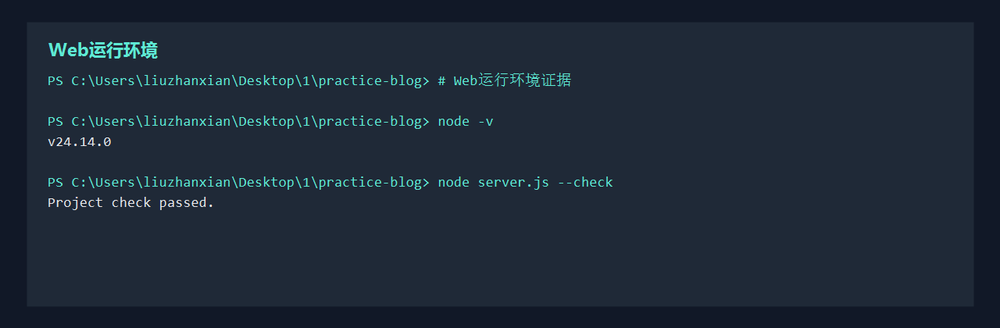

实验目标
将本地网页项目传输到 Linux 虚拟机，通过 Nginx 提供 Web 访问服务，并用截图证明 SSH、端口、部署脚本和最终页面都可用。
远程管理配置
sudo apt install openssh-server rsync -y
sudo systemctl enable --now ssh
systemctl status ssh
ss -tlnp | grep :22
ssh dev@192.168.56.101这部分重点证明虚拟机可以被远程管理，且 SSH 服务、端口和登录方式配置正确。
Web 站点部署
sudo apt install nginx -y
sudo mkdir -p /var/www/practice-blog
sudo rsync -av --delete /home/dev/practice-blog/ /var/www/practice-blog/
sudo nginx -t
sudo systemctl reload nginx仓库中的 scripts/deploy-nginx.sh 可以作为部署脚本证据，后续根据你的虚拟机 IP 和用户名微调即可。
验收证据

| 证据 | 说明 |
|---|---|
| SSH 登录截图 | 显示宿主机成功登录虚拟机。 |
| Nginx 状态截图 | 显示服务运行正常，配置检查通过。 |
| 浏览器访问截图 | 显示通过虚拟机 IP 打开本项目首页。 |
| 部署脚本 | 展示项目具备可复用的部署流程，而不是手动复制文件。 |